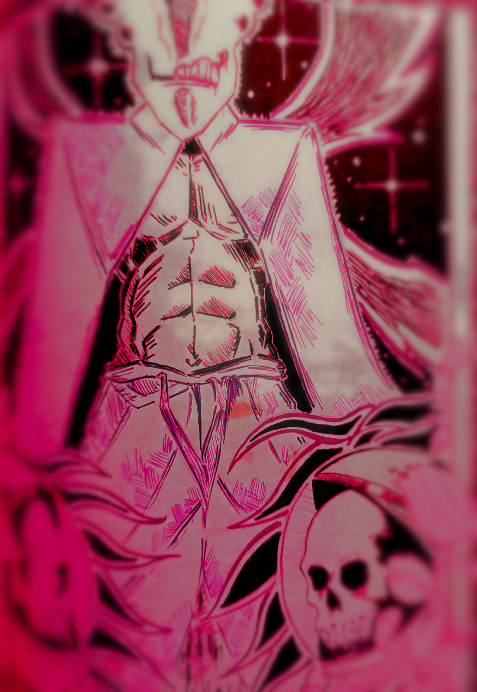
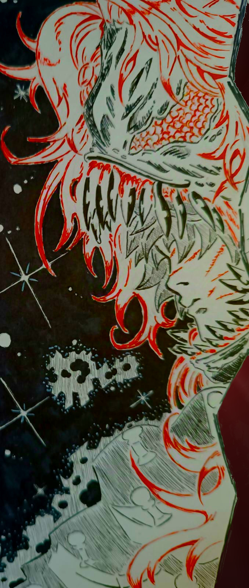
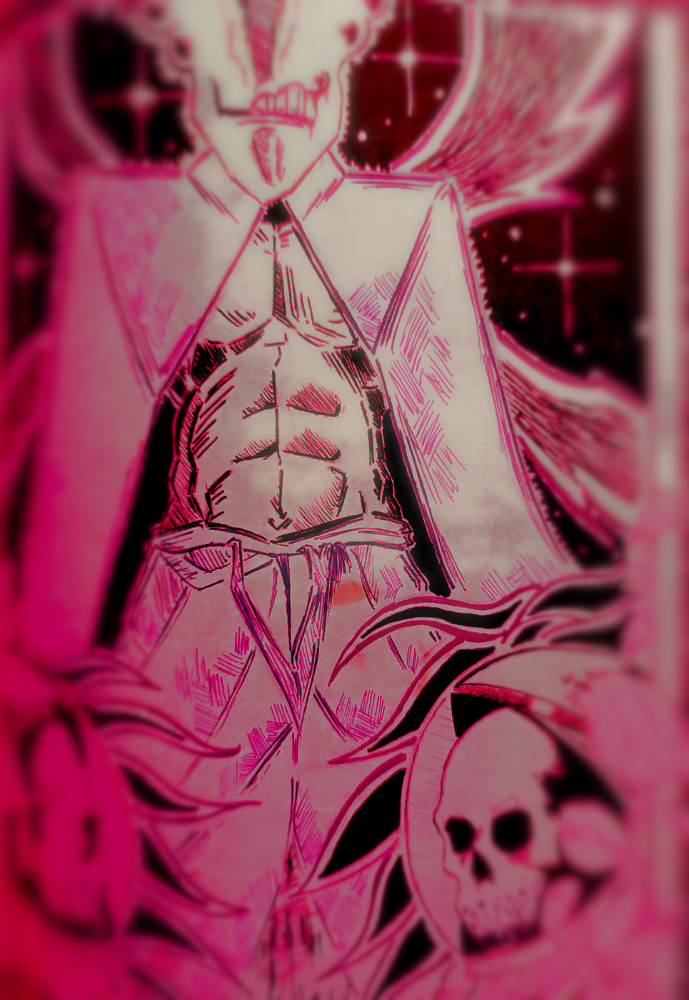
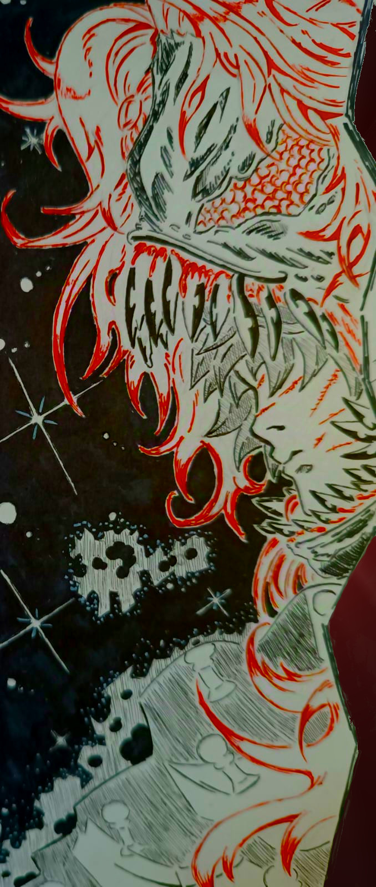

Magic X Logic
Magic X Logic es un universo donde la magia y la lógica científica coexisten en un equilibrio frágil y a menudo en conflicto. Este mundo está poblado por facciones que representan ambos poderes:

Magic
En Magic X Logic, la magia es la energía pura emanada del Vínculo Eterno, un ser multiversal que conecta todas las dimensiones y seres vivos. Los Ángeles de Batalla canalizan esta magia a través de un vínculo especial con espíritus mágicos, entidades que representan diversos aspectos del poder cósmico.


Logic
En Magic X Logic, la Lógica es una fuerza derivada de los conocimientos de los Locrosf, una raza ancestral que dominó las leyes fundamentales del universo. Los Filósofos, guerreros de la lógica, utilizan este poder gracias a un sistema de "lógica pura" transmitido por los Locrosf, permitiéndoles manipular la realidad según principios científicos y matemáticos.
 




LO ÚLTIMO

La existencia del miedo a lo desconocido da vida a un rival imponente.
Corona de Espinas, líder supremo de los Filósofos, es una figura envuelta en misterio, marcada por un pasado que pocos conocen. Su dominio sobre las enigmáticas partículas de Dios le permite trascender planos y reescribir las leyes del universo. Una vez vinculado a la magia, ahora persigue un propósito oculto, guiado únicamente por la fría precisión de la lógica. Su presencia inspira tanto temor como reverencia entre sus seguidores y enemigos.
HISRORIESTAS

La existencia del miedo a lo desconocido da vida a un rival imponente.
Corona de Espinas, líder supremo de los Filósofos, es una figura envuelta en misterio, marcada por un pasado que pocos conocen. Su dominio sobre las enigmáticas partículas de Dios le permite trascender planos y reescribir las leyes del universo. Una vez vinculado a la magia, ahora persigue un propósito oculto, guiado únicamente por la fría precisión de la lógica. Su presencia inspira tanto temor como reverencia entre sus seguidores y enemigos.
HISRORIESTAS

La existencia del miedo a lo desconocido da vida a un rival imponente.
Corona de Espinas, líder supremo de los Filósofos, es una figura envuelta en misterio, marcada por un pasado que pocos conocen. Su dominio sobre las enigmáticas partículas de Dios le permite trascender planos y reescribir las leyes del universo. Una vez vinculado a la magia, ahora persigue un propósito oculto, guiado únicamente por la fría precisión de la lógica. Su presencia inspira tanto temor como reverencia entre sus seguidores y enemigos.
HISRORIESTAS
La existencia del miedo a lo desconocido da vida a un rival imponente.
Corona de Espinas, líder supremo de los Filósofos, es una figura envuelta en misterio, marcada por un pasado que pocos conocen. Su dominio sobre las enigmáticas partículas de Dios le permite trascender planos y reescribir las leyes del universo. Una vez vinculado a la magia, ahora persigue un propósito oculto, guiado únicamente por la fría precisión de la lógica. Su presencia inspira tanto temor como reverencia entre sus seguidores y enemigos.
HISRORIESTAS
¿Quieres ser el primero en enterarte de nuestras novedades?
En Magic X Logic, tenemos grandes ideas y proyectos en marcha. Estamos creando historias fascinantes dentro de este increíble universo, y nos gustaría que formaras parte de ello. Si deseas contribuir o estar al tanto de todas nuestras novedades, regístrate ahora. Tu apoyo es fundamental para nosotros, ya que nos ayuda a llegar a más personas.
Actualmente, estamos comenzando con la creación de historietas y libros, pero nuestra visión es mucho más grande. En el futuro, aspiramos a producir películas, series y videojuegos. Cada uno de ustedes es un impulso vital para este proyecto, y juntos podemos competir con gigantes como Marvel y DC.
Gracias por tu apoyo y por acompañarnos en este emocionante viaje. ¡Esperamos que tengas un excelente día y que decidas unirte a nosotros registrándote!